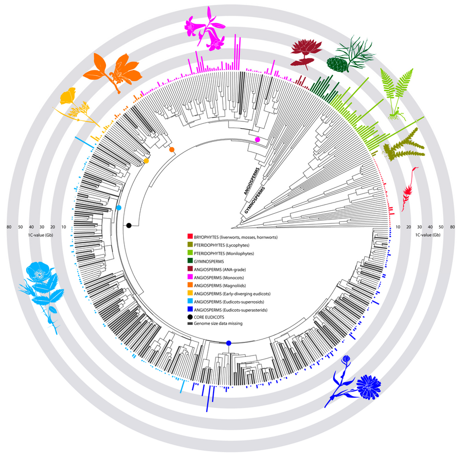

Les précurseurs des végétaux semblent être des Cyanobactéries, qu'on classait traditionnellement parmi les algues, sous le nom de cyanophytes ou algues bleu-vert. Elles apparaissent déjà dans des fossiles du Précambrien, datant d'environ 3,8 milliards d'années. Elles sont à l'origine des chloroplastes des cellules eucaryotes, et ont ainsi permis aux végétaux de réaliser la photosynthèse, à la suite d'une endosymbiose; les premières algues pluricellulaires seraient ainsi apparues il y a 1 200 millions d'années

Arbre phylogénétique des plantes terrestres indiquant la taille du génome dans les principales familles